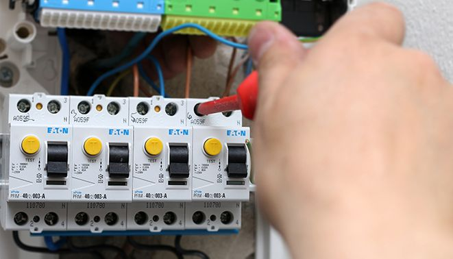

Johdonsuojakatkaisijat ja sulakkeet

Tyypit
Johdonsuojakatkaisijat voidaan luokitella niiden laukaisukäyrien mukaan.
Suoja tulee valita suojattavassa ryhmässä olevan kuormituksen perusteella.
Tällöin valintaan vaikuttavat mm. mahdolliset käynnistys virrat, juorman tehokerroin sekä
mahdollinen kuorman epälineaarisuus.
| Johdonsuojakatkaisijan tyyppi |
Käyttö |
| B |
Resistiivinenkuorma:
- Liesi
- Sähkölämmitys
- Lämminvesivaraaja
|
| C |
Tavanomaiset kuormat:
- Valaistus
- Pistorasiat
- Pienet moottorit
|
| D |
Kuorma, jolla on suuret käynnistysvirrat:
|
Tulppasulakkeet
| Nimellisvirta |
Sallittukuormitus |
Tunnusväri |
| 6A |
1380W |
Vihreä |
| 10A |
2300W |
Punainen |
| 16A |
3680W |
Harmaa |
| 20A |
4600W |
Sininen |
| 25A |
5750W |
Keltainen |
| 35A |
8050W |
Musta |
| 50A |
11500W |
Valkoinen |
| 63A |
14490W |
Kupari |